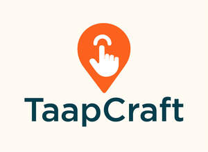
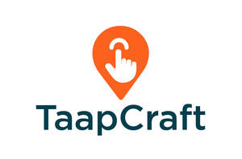

Trade Mark Journal No.2025/045 7 November 2025
UK00004285136 28 October 2025 (9,35,36,37,38,39,42)
Mark 1

Mark 2

- Class 9
- Downloadable software applications for phones, handheld devices, laptops, and computers; mobile applications; interactive software; downloadable computer software for connecting users with service providers; downloadable software for scheduling, booking, and managing appointments and services; downloadable software for reviewing and rating service providers; downloadable software for making and processing payments; downloadable software for communication between users and service providers; downloadable software for location-based service searching; downloadable software for customer relationship management (CRM); downloadable software for advertising and marketing services; downloadable computer software for online marketplaces; computer software for the creation, management, and operation of online service platforms; downloadable databases and directories of service providers; computer programs for use in e-commerce and digital transactions; downloadable software for social networking and messaging in relation to service provision; downloadable instructional materials in electronic form.
- Class 35
- Retail services in relation to, downloadable software applications for phones, handheld devices, laptops, and computers, mobile applications, interactive software, downloadable computer software for connecting users with service providers, downloadable software for scheduling, booking, and managing appointments and services, downloadable software for reviewing and rating service providers, downloadable software for making and processing payments, downloadable software for communication between users and service providers, downloadable software for location-based service searching, downloadable software for customer relationship management (CRM), downloadable software for advertising and marketing services, downloadable computer software for online marketplaces, computer software for the creation, management, and operation of online service platforms, downloadable databases and directories of service providers, computer programs for use in e-commerce and digital transactions, downloadable software for social networking and messaging in relation to service provision, downloadable instructional materials in electronic form; information, advisory and consultancy services relating to all of the aforesaid services; advisory, consultancy, and support services; business management services relating to the operation of online platforms and marketplaces for service providers; business management assistance for service providers in the fields of marketing, client acquisition, and operations; training services for business owners and service providers in relation to platform use, client management, and service delivery; and information, advisory, and consultancy services relating to all of the aforesaid.
- Class 36
- Financial services; deposit services; escrow services; funds management services; arranging the provision of finance; arranging the provision of trade credit; brokerage of credit agreements; securities deposit services; clearing services for payment transactions; bill payment services; electronic payment services; electronic commerce payment services; payment processing services; e-wallet payment services; financial transfers and transactions, and payment services; electronic funds transfer; financial transaction services for mobile applications; processing of electronic payments made through online platforms; issuing of tokens of value and vouchers; providing a wide variety of payment and financial services, namely, credit card payment processing services and providing personal and business lines of credit, electronic payment services involving electronic processing and subsequent transmission of bill payment data, bill payment services with guaranteed payment delivery, all conducted via a global communications network; credit card and debit card transaction processing services; providing electronic mobile payment services for others in the nature of providing secure commercial transactions and payment options using a mobile device at a point of sale; financial loan services; financing of loans; financial credit services; brokering of financial services; issuing of guarantees; financing of guarantees; issuing of statements of accounts; consultancy services relating to finance; provision of information relating to financial accounts; preparation and analysis of financial reports; preparation of credit reports; financial evaluation [insurance, banking, real estate]; financial assessment of company credit; financial information; financial advice relating to tax and tax planning; financial investment fund services; financial management for businesses; tax consultancy [not accounting]; pension fund administration; financial management of pensions; business appraisals for financial valuation; fiscal assessments and valuations; professional consultancy relating to finance; financial management of membership schemes; property management services; financial management of service bookings and payments; providing financial information in relation to online platforms and service marketplaces; provision of payment solutions for service providers and customers; information and advisory services in relation to insurance; insurance services relating to the provision of credit; debt settlement negotiation services; advisory services in relation to home insurance services, insurance for maintenance and repair services, electrical emergency breakdown and other emergency breakdown insurance, pest infestation insurance services, contamination insurance services, household insurance services, garden insurance services, insurance of personal property and possessions, insurance services relating to telephone wiring, sockets and internet connections, insurance services relating to electrical wiring and cabling including utility power supply lines, water and fuel supply pipework, drainage pipework and sewerage; and information, consultancy, and advisory services in relation to all of the aforesaid.
- Class 37
- General building contractor services; building project management services; facilities management, namely construction, maintenance, cleaning and repair; supervision of building renovation, repair and maintenance; construction, renovation, refurbishment, maintenance and repair of buildings, properties, and structures; trade and maintenance services, including plumbing, electrical, carpentry, construction, and building repair services; property maintenance and refurbishment; appliance installation and repair; heating, ventilation, and air conditioning installation and maintenance; installation, maintenance and repair of solar power and wind power systems; installation, maintenance and repair of household and electrical appliances, apparatus and equipment; installation, maintenance, cleaning and repair of glass, windows and blinds; installation, maintenance and repair of tv aerials and satellite dishes; installation, maintenance and repair of charging points for electric vehicles; installation, maintenance and repair of bathrooms, kitchens, and conservatories; installation of temporary structures for trade exhibitions; cleaning, repair and renovation of fabrics, textiles, furnishings, curtains, carpets, upholstery, floor coverings and leather; pest control and fumigation services; asbestos removal; welding for repair and maintenance purposes; scaffolding hire services; rental of construction equipment and cranes; moving and removal services; locksmith services; gardening and landscaping services; painting and decorating; roofing, glazing, tiling, plastering and paving services; damp proofing and condensation control; installation, maintenance and repair of soffits, fascia boards and guttering; building insulation; double glazing; drain cleaning and installation, maintenance and repair of drains; installation, maintenance, cleaning and repair of water supply, waste water, effluent, drainage and sewer installations and apparatus; advisory services relating to home care, repair and maintenance; advisory services relating to the care, repair and maintenance of domestic energy fittings and installations, water supply, sanitary and plumbing fixtures, installations and fittings and domestic appliances; advisory services relating to building and interior renovation services; advisory services relating to plumbing, heating, electrical, carpentry, joinery, roofing, glazier, painting and decorating, construction, restoration, tiling, plastering, paving, property maintenance, drain cleaning, guttering, condensation and mould control, fencing, flooring, cleaning, laundry, chimney sweeping, building insulation, damp proofing, double glazing, landscaping and welding services; advisory services relating to water leak detection services within buildings; advisory services relating to the installation, maintenance and repair of boilers, radiators, central heating, thermostats, gas heaters, burglar alarms, lighting and security lighting; advisory services relating to the installation of cable television systems; advisory services relating to vehicle maintenance, repair and breakdown assistance; advisory services relating to the maintenance, cleaning and repair of motor vehicles and parts thereof; advisory services relating to the maintenance and repair of computers and domestic electrical appliances; advisory services relating to furniture assembly, installation, maintenance, repair and restoration, including furniture adapted for use by those with mobility difficulties; and information, advisory, and consultancy services relating to all the aforesaid services.
- Class 38
- Chat room services; web and text messaging services; electronic message delivery services; transmission of short messages (SMS), images, speech, sound, music and text communications between mobile telecommunications devices; exchange of messages via computer transmission; forwarding messages of all kinds to Internet addresses (web messaging); audio, text and video broadcasting services over computer or other communication networks, namely, uploading, posting, displaying, modifying, tagging and electronically transmitting data, information, audio and video; provision of online forums and communities for connecting users with service providers and for communication on topics of general interest; electronic exchange of voice, data, audio, video, text and graphics accessible via the Internet, computer and telecommunications networks; provision of an online interactive forum to enable contractors and service providers to provide informational, instructional and educational content in relation to their trade to potential customers; transmission by way of electronic media, including Internet platforms, e-mail newsletters and mobile communications messages, of editorial content and commercial information such as classified advertisements and contract tenders to potential customers; Internet-based information and database services in the nature of providing portals on the Internet; transmission of contractors’ and tradespeople’s service information and classified directories and information contained therein; computer network communication services; mobile communication services; providing access to databases and directories of service providers; electronic mail services; providing telecommunications connections to a global computer network; communications by computer terminals and mobile applications; providing online chatrooms and instant messaging services for service coordination; video conferencing services; and advisory and consultancy services relating to all the aforesaid.
- Class 39
- Transport; packaging and storage of goods; travel arrangement; courier services; transportation logistics; delivery of goods; removal and relocation services; collection and delivery of goods; furniture removal and storage; freight and cargo transport; transport reservation services; vehicle rental and driver services; transport information and tracking services provided via mobile applications; booking and scheduling of transportation through online platforms; and information, advisory, and consultancy services relating to all the aforesaid.
- Class 42
- Software as a Service (SaaS); Platform as a Service (PaaS); Hosting platforms on the Internet; Application Service Provider (ASP) services; Blockchain as a Service (BaaS); Software design and development; Platform design and development; Installation, maintenance, updating, customisation and repair of computer software; Installation, maintenance and updating of database software; Hosting of databases; Hosting of software platforms for online marketplaces; Hosting of electronic facilities for others for organising and conducting discussions via communication networks; Online data storage; Data mining; Cloud computing services; Provision of online non-downloadable software for connecting users with service providers; Software as a Service (SaaS) featuring software for scheduling, booking, and managing services; Software as a Service (SaaS) featuring software for processing electronic payments, reviews and customer feedback; Software as a Service (SaaS) featuring software for database management, sales, customer tracking and management; Software as a Service (SaaS) featuring software for business management, client acquisition, and quotation generation; Software as a Service (SaaS) featuring software allowing users to issue quotations, set pricing, track sales performance, carry out service fulfilment and manage customer information; Software as a Service (SaaS) and Platform as a Service (PaaS) for marketing lead generation and business lead management; Software as a Service (SaaS) featuring software for use in customer relationship management (CRM); Providing temporary use of non-downloadable computer software for managing business contacts, transactions, and relationships; Providing temporary use of non-downloadable computer software for managing contact information, capturing, recording, organising, and managing business transactions, and managing social interactions between individuals related to business relationships; Providing temporary use of non-downloadable software for point-of-sale (POS) transactions, tracking sales performance, and managing business leads, customers, orders, and quotations; Providing temporary use of non-downloadable software for online promotion, advertising and marketing, electronic messaging and text marketing, customer data management, and CRM; Providing temporary use of non-downloadable software for advertising the goods and services of others via electronic media and the Internet; Providing temporary use of non-downloadable financial management, e-commerce and e-payment software; Providing temporary use of online non-downloadable software for processing electronic payments, creating and managing invoices, and issuing receipts for mobile payment transactions; Application Service Provider (ASP) featuring application programming interface (API) software for payment collection, transaction processing, data forwarding and information management; Providing non-downloadable e-commerce software to allow users to perform electronic business transactions via global computer networks; Computer services, namely, application service provider featuring API software to allow users to perform electronic business transactions via a global network; Programming of software for e-commerce platforms; Development and provision of scheduling software; Non-downloadable software, including artificial intelligence (AI) and machine learning (ML) software; Non-downloadable computer software applications and platforms; Providing non-downloadable digital tools and algorithms; Platform as a Service (PaaS) featuring software platforms for transmission of images, audiovisual content, video content, and messages; Computer services, namely, providing search engines for obtaining data and information via computer networks and global information networks on tradespersons and contractors in the field of home care, repair and maintenance; Quality control of services; Certification (quality control); Quality control for others; Advisory services relating to engineering, architecture, surveying, bathroom design, kitchen design, window and blind design, and energy-efficient and renewable energy services; and information, advisory, and consultancy services relating to all the aforesaid services.
TAAPCRAFT LTD
Representative: Trade Mark Wizards Limited